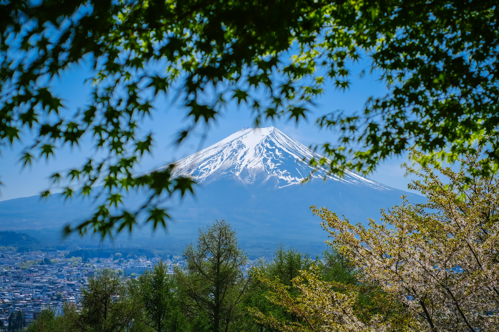

富士山，日本的象征，是日本第一高峰，也是世界文化遗产。这座活火山以其完美的圆锥形山体和四季变换的美景，吸引着无数游客前来观赏。
从东京出发，只需约2小时车程即可抵达富士山脚下。无论是春天的樱花、夏季的云海、秋天的红叶还是冬季的雪景，富士山都展现出不同的魅力，是摄影爱好者的天堂。
3月至5月（樱花季）和10月至11月（红叶季）是富士山最美的季节。7月至8月是登山季节，此时山顶积雪融化，适合徒步登山。
富士五湖、河口湖、箱根温泉、新仓山浅间公园、富士急乐园、富士山本宫浅间大社、忍野八海。